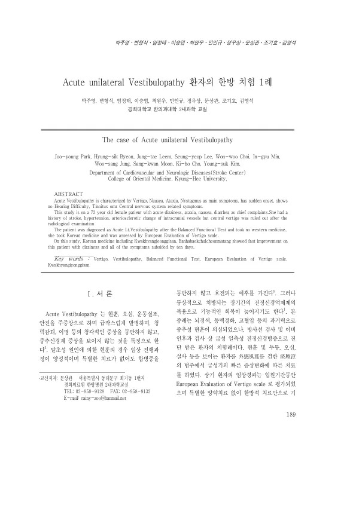

Acute unilateral Vestibulopathy 환자의 한방 치험 1례
Park Jy, Byeon Hs, Leem Jt, Lee Sy, Choi Ww, Min Ig, Jung Ws, Moon Sk, Cho Kh, Kim Ys
The Journal of Internal Korean Medicine 189-195

첫 장 · 오픈액세스First page · open access
논문 소개Summary
급성 일측성 전정신경병증 환자를 한방 치료만으로 본 증례입니다. 73세 여성이 새벽에 갑작스러운 심한 어지럼과 상복부 불편감, 설사로 왔습니다. 뇌경색과 고혈압, 두개내 혈관의 동맥경화성 변화가 있어 중추성 현훈이 의심되었으나 방사선·이비인후과 검사에서 배제되었고 평형기능검사로 급성 좌측 전정신경병증을 진단받았습니다. 환자는 양약을 쓰지 않고 곽향정기산과 반하백출천마탕 등 한방 치료만 받았으며 경과는 유럽 현훈 평가척도로 쟀습니다. 입원 이틀 동안은 앉은 자세를 유지하기 어려울 만큼 심했으나 열흘 만에 증상이 모두 가라앉았습니다. 증례 한 건이므로 효과를 일반화할 수 없습니다.
A case of acute unilateral vestibulopathy treated with Korean medicine alone. A 73-year-old woman presented in the early hours with sudden severe dizziness, epigastric discomfort and diarrhoea. A history of cerebral infarction, hypertension and arteriosclerotic change in the intracranial vessels raised suspicion of central vertigo, but radiological and otolaryngological examination ruled this out, and balance function testing gave a diagnosis of acute left vestibulopathy. The patient took no Western medication, receiving only Korean medicine including Kwakhyangjeonggi-san and Banhabaekchulcheonma-tang, with progress measured on the European Evaluation of Vertigo scale. For the first two days she was too dizzy to hold a seated position; within ten days all symptoms had subsided. Being a single case, the result cannot be generalised.
인용Cite
Park Jy, Byeon Hs, Leem Jt, Lee Sy, Choi Ww, Min Ig, Jung Ws, Moon Sk, Cho Kh, Kim Ys. Acute unilateral Vestibulopathy 환자의 한방 치험 1례. The Journal of Internal Korean Medicine. 2008:189-195.